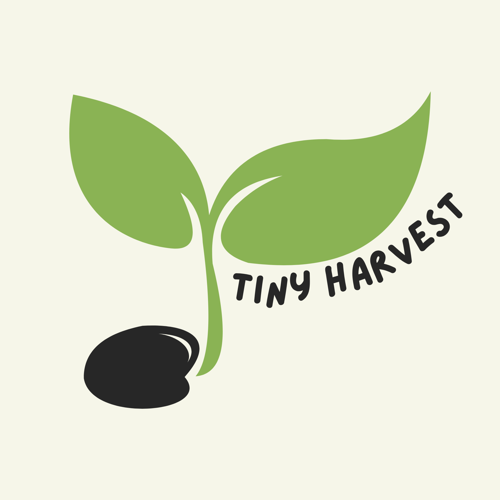
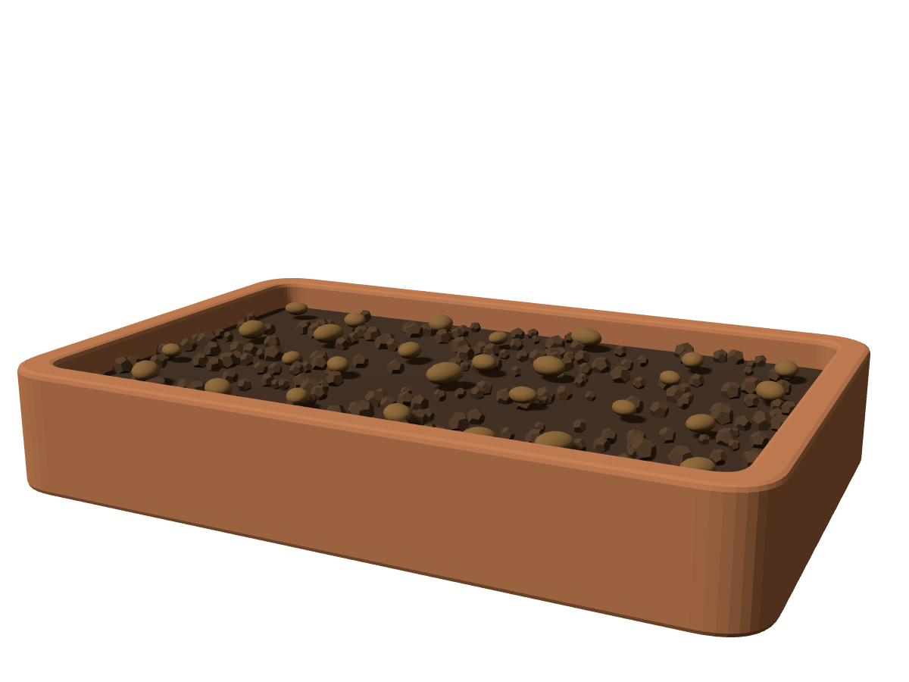

Microgreens kits for the windowsill, from EUR 9.95
Plant today,
Harvest next week.
A tray of microgreens on any windowsill: organic seeds, coco coir, the tray and a guide you can follow with one hand. Snip them straight onto your plate 7 to 10 days after sowing.

Move your cursor. The sprout turns to the light.
Pick the tray that fits your sill.
Four sizes, one promise: fresh microgreens in 7 to 10 days. Every kit ships with organic, non-GMO seeds and the guide. Prices include VAT.
Ten days,
seed to plate.
Scroll to grow the tray, or tap a day.

Three steps. No green thumb required.
The guide fits on one card. Follow it once and you will not need it for the second tray.
-
Fill the tray
Tip the coco coir into the tray and level it. Mist until it is damp, not wet.
-
Sow the seeds
Scatter the seeds in one even layer, mist again, lid on. Keep them dark for the first days.
-
Watch and harvest
Lid off, onto the sill. On day 7 to 10, snip just above the soil and eat them the same day.
Your first ten days, day by day
Small extras. Bigger, faster trays.
Air, light and food. Add any of them to a kit today, or pick them up when the first tray is done.
Grown by you. Not shipped from far.